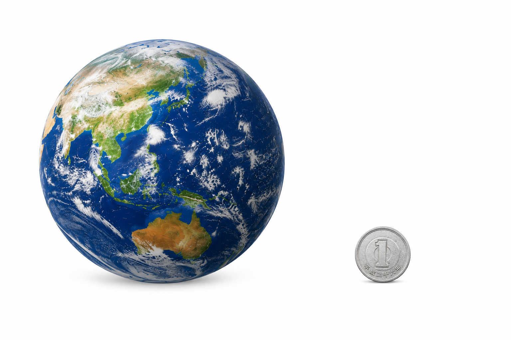
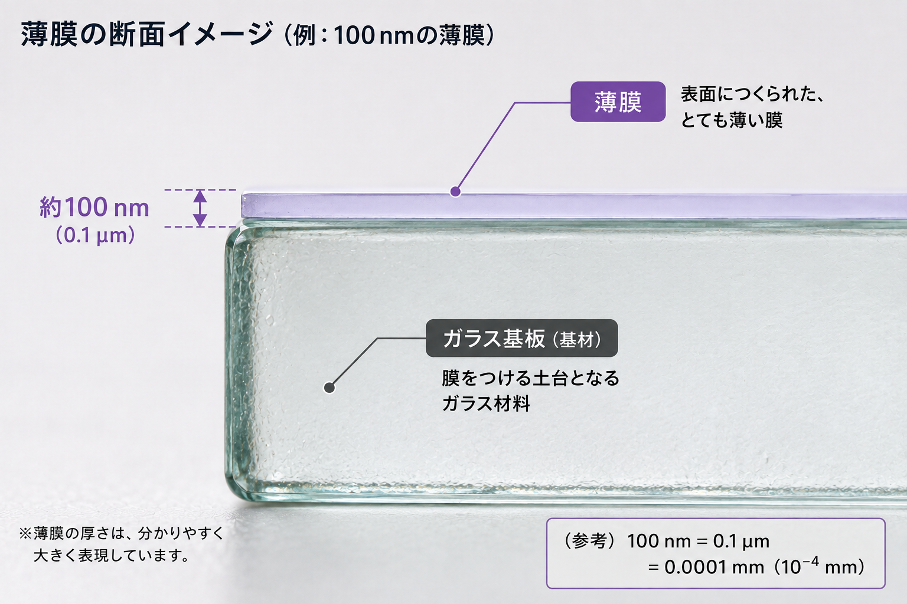

THIN FILM TECHNOLOGY / 02
どのくらい薄い？
薄膜の厚さでは、nm（ナノメートル）という、とても小さな単位がよく使われます。02では、nmがどのくらい小さいのかをイメージしてみます。
1 nmって、どのくらい小さい？
1 nm（ナノメートル）は、1 mm（ミリメートル）の100万分の1です。数字だけでは想像しにくいので、大きさのイメージで見てみましょう。
1 nm ＝ 0.000001 mm
＝ 1 mmの100万分の1
地球と1円玉でイメージすると

地球の直径を1メートルとすると、1円玉の大きさが1 nm（ナノメートル）になります。
ナノメートルは、肉眼では見分けられないほど小さな世界です。
ナノメートルは、肉眼では見分けられないほど小さな世界です。
参考：文部科学省「ナノテクノロジーってなに？」 ↗ をもとにEPA作成
薄膜ではnmの世界を扱う
たとえば100 nmの薄膜は、0.1 µmです。薄膜技術では、このような非常に小さな厚さを扱います。

100 nmは、1 nmの約100個分に相当する厚さです。
薄膜の厚さは、目的や材料によって異なります。「薄膜＝100 nm」ではなく、100 nmは薄さをイメージするための一例です。
薄膜の厚さは、目的や材料によって異なります。「薄膜＝100 nm」ではなく、100 nmは薄さをイメージするための一例です。
薄膜は、薄いだけではありません。
次の03では、薄膜をつけることでどんな働きを加えられるのかを見ていきます。
次の03では、薄膜をつけることでどんな働きを加えられるのかを見ていきます。